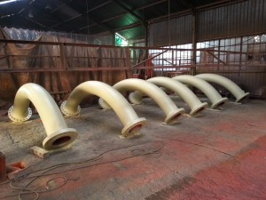
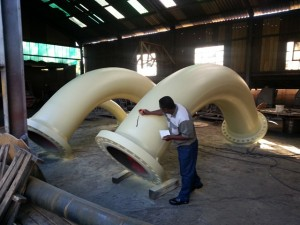
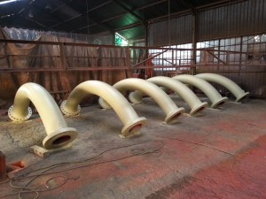
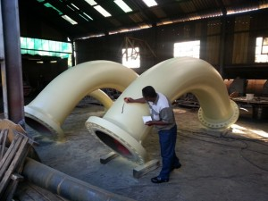

Tone-Blast Engineering is managed and owned by Gordon Tonetti, a qualified mechanical engineer with more than 25 years’ experience in the abrasive blasting and painting industry.
The business was established in 1972 by James Tonetti, father to Gordon. Over the decades, the company has built a strong reputation for quality workmanship, reliable service and fast turnaround times for industrial customers.

 


